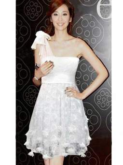
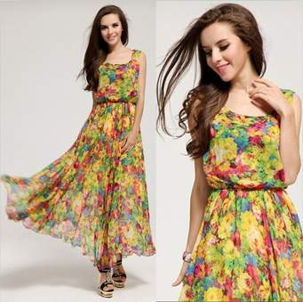
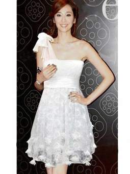
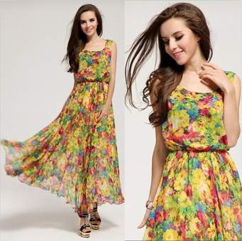

A 2009 graduate of Mumbai’s SNDT Women’s University, where she studied Apparel Manufacture and Design, Masaba Gupta launched her self-titled label Masaba that same year, debuting as part of Lakme Fashion Week’s Gen Next show for up-an-coming designers. Her signature style – a combination of traditional Indian aesthetics and modern flair typified by lightweight fabrics brightened by vibrant, quirky prints – was an instant hit and her designs have been worn by Bollywood stars Bipasha Basu and Shilpa Shetty. Since her debut, Gupta has won awards including the 2012 L’Oreal Paris Femina Award for Best Emerging Designer and PETA India’s Most Talented Designer of 2013.
Born and raised in Rourkela, Bibhu Mohapatra later moved to the USA to study economics, though his love of fashion led him to New York City where he studied at the prestigious Fashion Institute of Technology and won the 1997 Critics’ Award for Best Evening Wear Designer of the Year. After working with high profile brands including Halston and J. Mendel, Mohapatra set out on his own to launch his eponymous label in 2008 and has gained a name for himself with exquisite evening dresses that flow and flatter the female form. Most recently, his designs have been seen on America’s First Lady Michelle Obama.